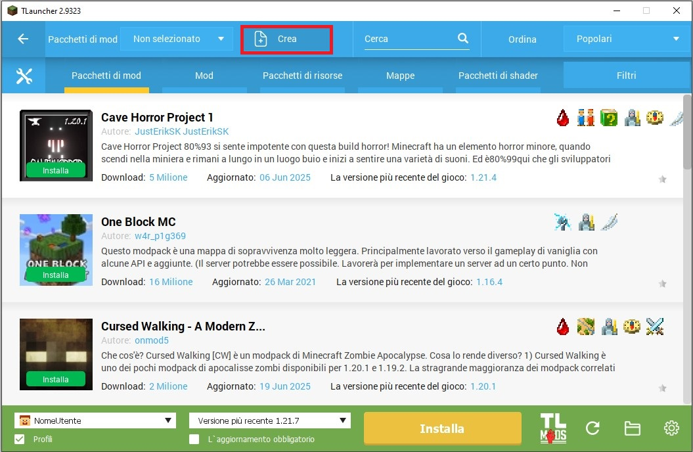
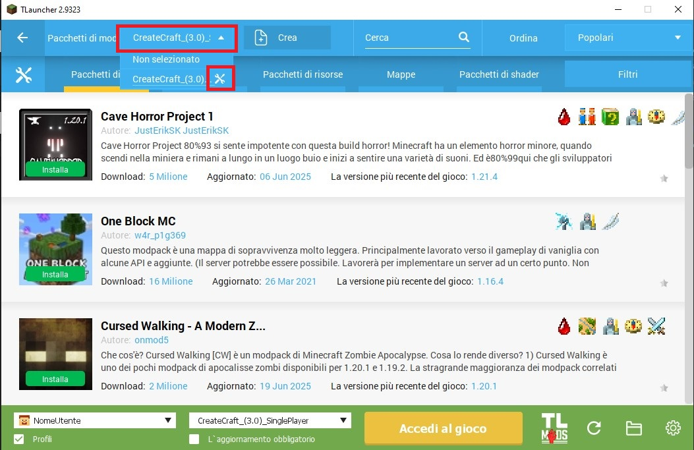
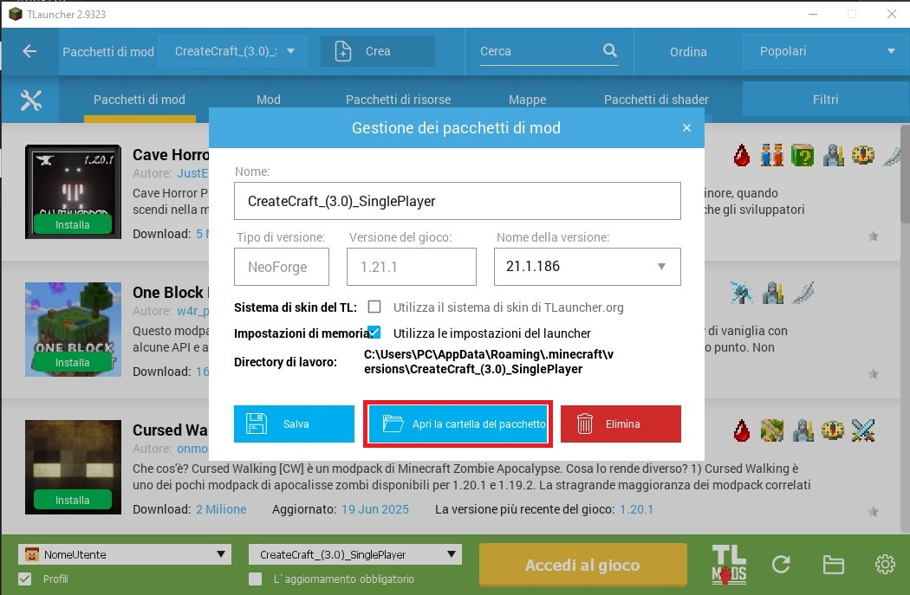
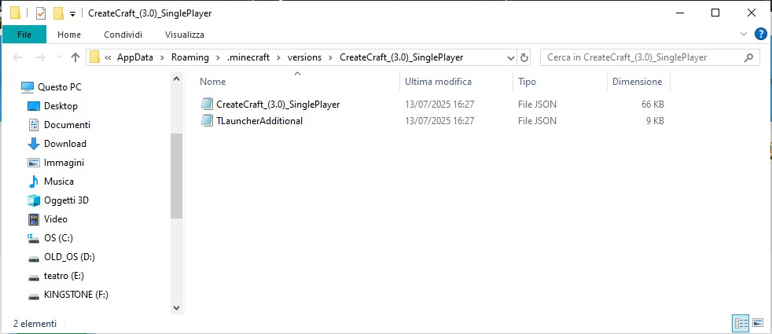

CAPITANFALCO / CREATECRAFT MODPACK
Files
- CreateCraft
- CreateCraftCraccato
- CreateCraftPremium
- CreateSubs.md
- Supporto
- Discord
- APRI UN TICKET
CAPITANFALCO
CREATECRAFT
Manuale di Installazione
-
Prima di tutto installa JAVA-JDK17: (Clicca qui sotto rispetto al tuo computer)
WIndows -
Scarica
TLauncher
da qui.
-
Nel menu, clicca sulla scritta TL in basso a destra.
-
A questo punto clicca sulla scritta Crea.

-
Ora scegli un nome che più ti piace per riconoscere la versione della CreateSubs, selezionare la versione forge 1.20.1 e 47.2.21 e premere su crea, come nella foto:

-
Ora clicca a destra della scritta crea, viene un menù a tendina in viene il nome del modpack appena creato e accanto al nome di esso viene un'icona.

-
Cliccandoci ti aprirà una schermata dove dovrai cliccare "apri la cartella del pacchetto".

- Ti aprirà questo:

- Scarica il pacchetto da qui: CreateCraftModPack
- Scaricato il mod pack aprilo entra nella cartella ".minecraft" del pacchetto da te creato e estrai li la cartella MODS e CONFIGS. Dopo aver fatto ciò aprile quest'ultima cartella e copiare e incollare le tre cartelle all'interno nella cartella CreateSubs.
- Ora selezionare nel menù in basso accanto alla scritta "accedi al gioco" il modpack appena creato che si riconoscerà per il nome appena creato.
- Dopo aver avviato il gioco andare lenna sezione multiplayer e inserire questo IP: CapitanFalco008.aternos.me